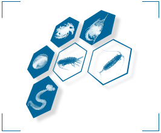

|
Last update: 18 June 2007, by Philippe Grosjean
|
|
|
|
|

Plankton samples are traditionally collected with plankton nets and
analyzed by taxonomists using a stereomicroscope and determination
keys. This work is labor-intensive and requires highly-specialized and
well-trained people. With the advances in image analysis and machine learning,
it becomes evident that the analysis of digitized plankton images can
support, ease and speed-up the work. The free Zoo/PhytoImage software
(licensed under GNU/GPL) provides a complete solution for such a job.
|